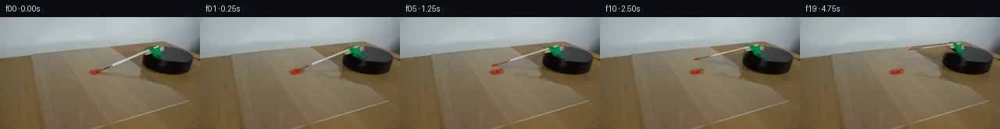

![首帧]()

Round 00
2026-11-05T14:56:23.328621+00:00像素候选变化代码 +221/−0inspection 更新
pixels e8487dab7f01b23f · code 89dd95780e806cf6
查看本轮 generate.py 真实 diff
--- previous/generate.py
+++ current/generate.py
@@ -0,0 +1,221 @@
+"""Local source-pixel animation: analytic clockwise brush/clamp rotation.
+No network, external assets, image models, or rendering engines are used.
+"""
+from pathlib import Path
+import json
+import math
+import numpy as np
+import cv2
+from PIL import Image, ImageDraw
+from scipy.ndimage import gaussian_filter
+from artifact_io import save
+
+ROOT = Path(__file__).resolve().parent
+W, H, SS = 256, 144, 4
+CX, CY = 215.0, 62.0
+DEPTH = 0.34
+THETA0 = math.radians(166.0)
+STEP = math.radians(2.8)
+R_TIP = 96.5
+Z0, ZSLOPE = 29.529, 0.306
+source = np.array(Image.open(ROOT / 'first_frame.png').convert('RGB'))
+assert source.shape == (H, W, 3)
+
+
+def polygon_mask(points):
+ mask = np.zeros((H * SS, W * SS), np.uint8)
+ cv2.fillPoly(mask, [np.round(np.asarray(points) * SS).astype(np.int32)], 255)
+ return cv2.resize(mask, (W, H), interpolation=cv2.INTER_AREA).astype(np.float32) / 255
+
+
+# Masks follow the photographed silhouettes; image colors are retained.
+handle_alpha = polygon_mask([
+ (190.1, 41.3), (191.0, 43.0), (147.0, 61.6),
+ (143.6, 62.3), (143.4, 60.3), (146.1, 58.9)
+])
+ferrule_alpha = polygon_mask([
+ (145.1, 60.0), (146.0, 61.9), (130.0, 68.8),
+ (127.9, 68.2), (129.0, 66.1)
+])
+bristle_alpha = polygon_mask([
+ (129.4, 66.2), (130.2, 68.4), (122.2, 71.4),
+ (119.9, 71.0), (119.7, 69.3), (123.0, 67.9)
+])
+brush_alpha = np.maximum.reduce([handle_alpha, ferrule_alpha, bristle_alpha])
+clamp_alpha = polygon_mask([
+ (184.0, 42.1), (188.5, 39.9), (195.1, 39.8),
+ (198.3, 38.4), (204.4, 36.8), (206.8, 39.2),
+ (207.4, 43.0), (209.2, 45.9), (212.6, 49.8),
+ (211.6, 52.5), (206.2, 54.1), (198.8, 52.3),
+ (192.0, 50.0), (186.6, 49.6), (183.1, 47.6)
+])
+
+# Reconstruct just the object silhouette and its original thin cast shadow.
+erase = (np.maximum(brush_alpha, clamp_alpha) > 0.02).astype(np.uint8) * 255
+erase = cv2.dilate(erase, np.ones((3, 3), np.uint8), iterations=1)
+old_shadow = np.zeros((H, W), np.uint8)
+cv2.line(old_shadow, (130, 72), (179, 68), 255, 3, cv2.LINE_AA)
+cv2.line(old_shadow, (146, 70), (183, 66), 255, 3, cv2.LINE_AA)
+erase = np.maximum(erase, old_shadow)
+# The red paint is stationary: keep its photographed pixels intact.
+erase[67:75, 113:130] = 0
+background = cv2.inpaint(source, erase, 4.0, cv2.INPAINT_TELEA)
+
+# Restore texture to the very narrow reconstructed strips, without changing
+# any photographed pixels outside their mask. Noise is sampled from the source.
+residual = source.astype(float) - gaussian_filter(source.astype(float), (0.65, 0.65, 0))
+noise = np.roll(residual, shift=(9, -12), axis=(0, 1))
+wood = (erase > 0) & (np.indices((H, W))[1] < 183)
+background[wood] = np.clip(background[wood].astype(float) + noise[wood] * 0.30, 0, 255).astype(np.uint8)
+
+Y, X = np.mgrid[:H, :W]
+# Prevent tabletop shadows from being laid over the platform or the wall.
+platform = (((X - 215) / 33.4) ** 2 + ((Y - 49) / 12.2) ** 2 < 1.06)
+platform |= (((X - 215) / 32.5) ** 2 + ((Y - 61) / 12.6) ** 2 < 1.02) & (Y >= 49)
+table = Y > (51.5 - 0.117 * X)
+shadow_allowed = table & ~platform
+
+
+def brush_affine(theta):
+ def basis(a):
+ return np.array([[math.cos(a), -math.sin(a)],
+ [DEPTH * math.sin(a) + ZSLOPE, DEPTH * math.cos(a)]])
+ m = basis(theta) @ np.linalg.inv(basis(THETA0))
+ origin = np.array([CX, CY - Z0])
+ return np.column_stack([m, origin - m @ origin]).astype(np.float32)
+
+
… diff truncated; 134 more lines …